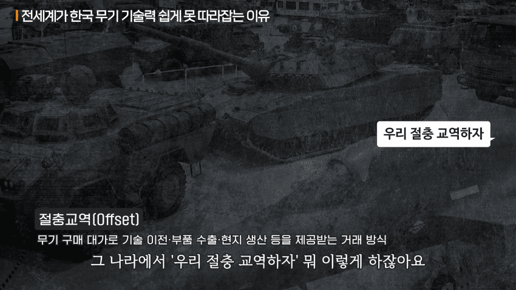
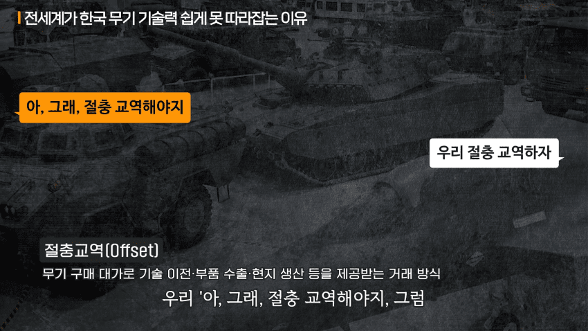
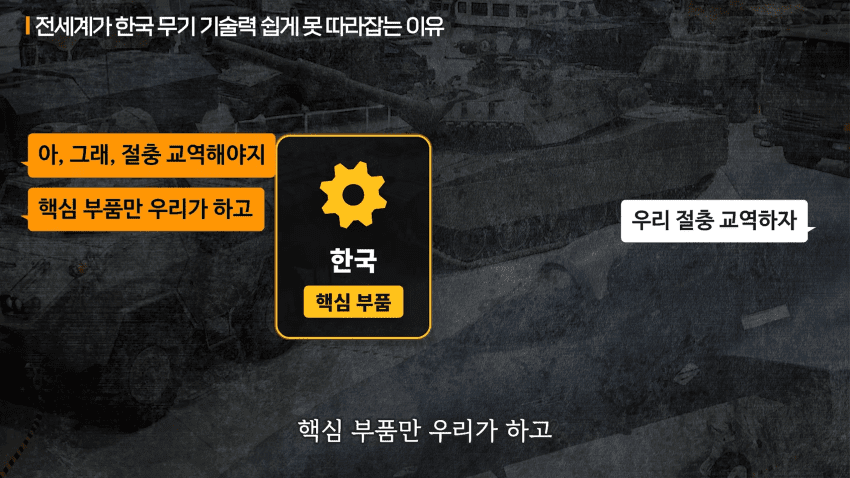
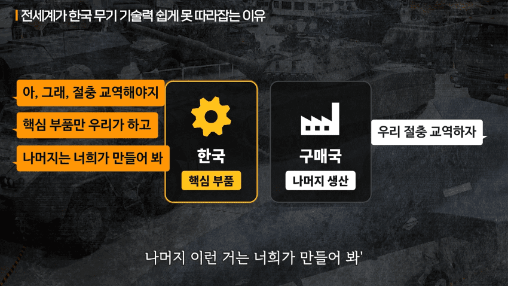
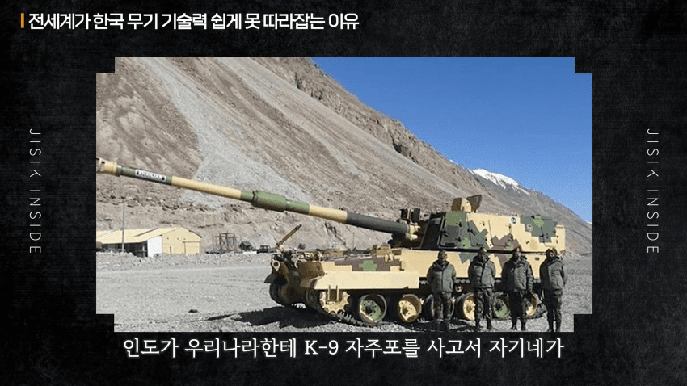
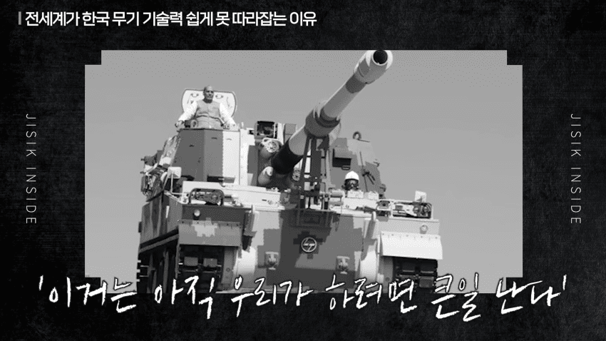
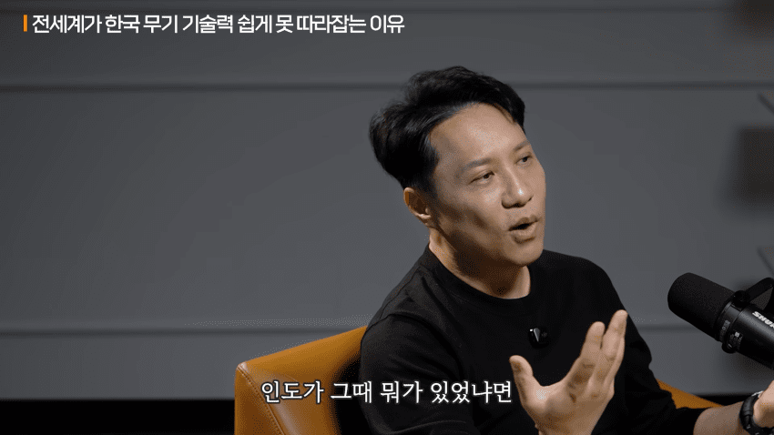
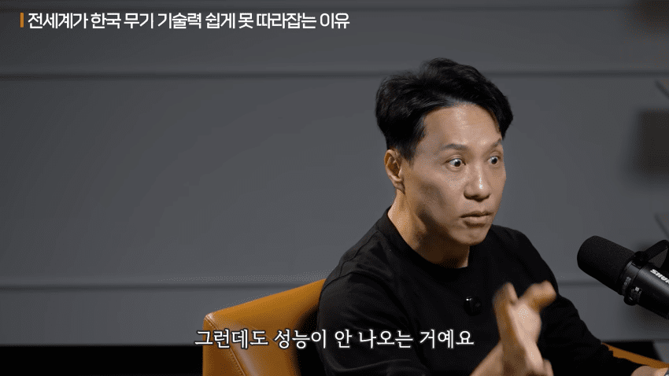
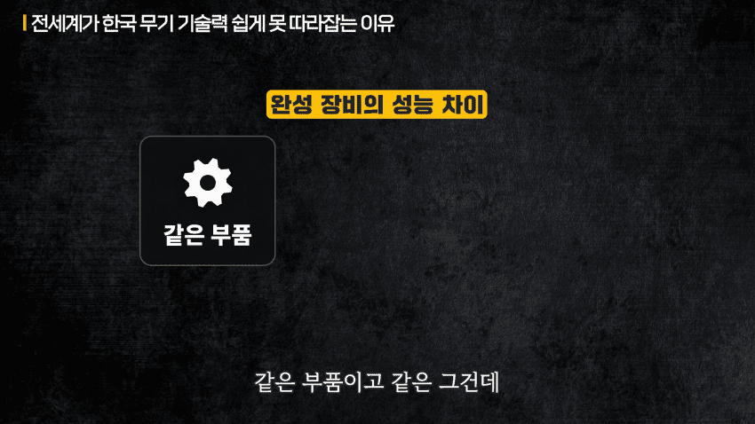
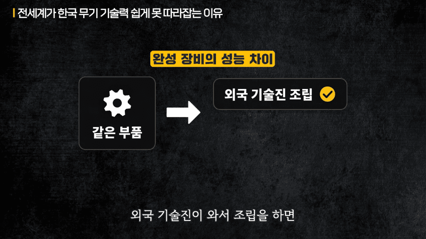
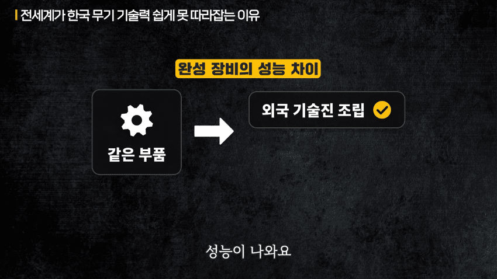
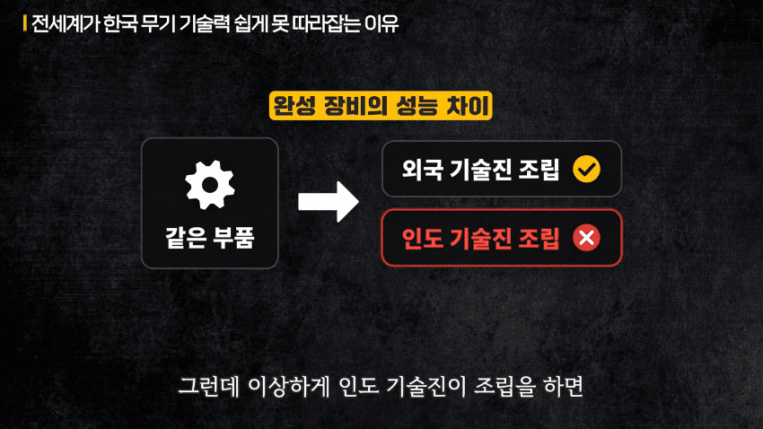
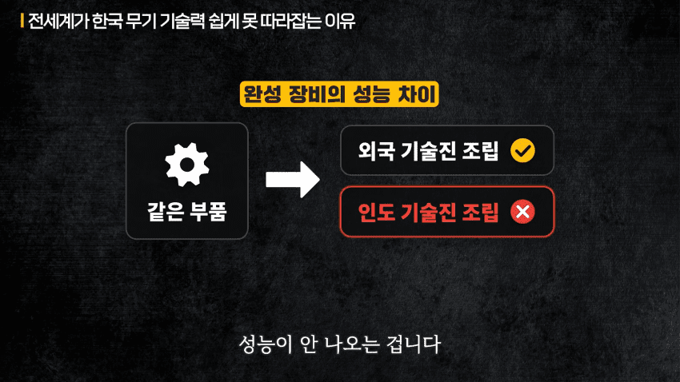
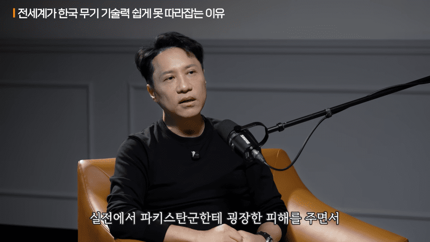
인도가 인도했다














인도가 인도했다
댓글
수집 당시 댓글 136개
ㅇㅇ · 11.06 09:03:19
· ㅇㅇ · 11.06 09:06:09
· 1212 · 11.06 10:30:55
· ㅇㅇ · 11.06 15:03:11
· ㅇㅇ · 11.06 15:44:09
ㄱㄷㅂㅅㄱㄷ · 11.06 09:07:14
· ㅇㅇ · 11.06 09:09:31
· ㅇㅇ · 11.06 09:37:13
· ㅇㅇ · 11.06 09:52:03
· ㅇㅇ · 11.06 10:08:03
· ㅇㅇㅇ · 11.06 12:22:46
· ㅇㅇ · 11.06 13:44:32
· ㅇㅇ · 11.06 15:04:51
· ㅇㅇ · 11.06 17:26:51
· ㅇㅇ · 11.06 17:27:23
· ㅇㅇ · 11.06 17:33:27
· ㅇㅇ · 11.06 19:22:40
쿠이쿠이 · 11.06 09:09:16
· 1212 · 11.06 10:31:25
· ㅇㅇ · 11.06 13:36:22
· ㅇㅇ · 11.06 15:06:09
ㅇㅇ · 11.06 09:12:35
ㅇㅇ · 11.06 09:15:18
· ㅇㅇ · 11.06 09:20:04
· ㅇㅇ · 11.06 09:51:26
이지러너 · 11.06 09:24:32
NO벨과학상개센징 · 11.06 09:25:07
· NO벨과학상개센징 · 11.06 09:25:21
· NO벨과학상개센징 · 11.06 09:25:34
· NO벨과학상개센징 · 11.06 09:25:48
ㅇㅇ · 11.06 09:25:50
· ㅇㅇ · 11.06 09:27:39
死死五入 · 11.06 09:29:56
((ㅇㅅㅇ)) · 11.06 09:35:12
ㅇㅇ · 11.06 09:38:02
2456778 · 11.06 09:39:30
· ㅇㅇ · 11.06 09:43:51
손예나 · 11.06 09:40:41
· ㅇㅇ · 11.06 12:20:05
· 손예나 · 11.06 13:05:27
ㅇㅇ · 11.06 09:43:25
ㅇㅇ · 11.06 09:48:31
알라라크 · 11.06 09:53:27
ㅇㅇ · 11.06 09:54:06
· ㅇㅇ · 11.06 09:54:10
· ㅇㅇ · 11.06 10:04:04
· 1212 · 11.06 10:32:10
ㅇㅇ · 11.06 10:03:44
· ㅇㅇ · 11.06 10:10:18
· 손예나 · 11.06 13:49:13
ㅇㅇ · 11.06 10:06:57
· ㅇㅇ · 11.06 10:15:43
· 1212 · 11.06 10:32:50
ㅇㅇ · 11.06 10:10:58
ㅇㅇ · 11.06 10:14:46
ㄱㅂㅈㄱㄷ · 11.06 10:18:23
ㅇㅇ · 11.06 10:27:30
ㅇㅇ · 11.06 10:32:32
ㅇㅇ · 11.06 10:32:40
ㅇㅇ · 11.06 10:38:24
· 타바코쉬카 · 11.06 11:30:14
· ㅇㅇ · 11.06 11:37:51
· 타바코쉬카 · 11.06 12:49:05
ㅇㅇ · 11.06 10:47:49
ㅇㅇ · 11.06 10:50:55
Oo · 11.06 11:12:35
ㅇㅇ · 11.06 11:16:09
ㅇㅇ · 11.06 11:17:56
ㅇㅇ · 11.06 11:18:33
타바코쉬카 · 11.06 11:29:38
ㅇㅇ · 11.06 11:37:05
· ㅇㅇ · 11.06 11:44:17
· ㅇㅇ · 11.06 12:21:31
· ㅇㅇ · 11.06 12:30:31
· 집가고싶다2트 · 11.06 12:56:09
· 집가고싶다2트 · 11.06 12:58:16
· piyo · 11.06 13:25:18
· 손예나 · 11.06 13:47:07
· ㅇㅇ · 11.06 13:47:12
· ㅇㅇ · 11.06 16:35:40
ㅇㅇ · 11.06 11:49:11
ㅇㅇ · 11.06 12:14:23
ㅇㅇ · 11.06 12:19:17
ㅇㅇ · 11.06 12:19:43
아쿠아맨서 · 11.06 12:24:11
ㅇㅇ · 11.06 12:27:29
ㅇㅇ · 11.06 12:41:22
ㅇㅇ · 11.06 12:57:34
piyo · 11.06 13:27:22
· ㅇㅇ · 11.06 16:28:48
츤데렐라 · 11.06 13:39:18
ㅇㅇ · 11.06 13:56:16
ㅇㅇ · 11.06 14:00:32
ㅇㅇ · 11.06 14:23:47
ㅇㅇ · 11.06 14:39:38
ㅇㅇ · 11.06 15:47:37
ㅇㅇ · 11.06 16:35:07
야룽이 · 11.06 18:09:56
오무오무 · 11.06 19:56:29
ㅇㅇ · 11.06 22:41:31
땨뗘(봇) · 11.06 08:45:14
ㅇㅇ · 11.06 08:45:35
다
끝
났
다
ㅇㅇ · 11.06 08:46:22
· ㅇㅇ · 11.06 08:46:46
ㅇㅇ · 11.06 08:47:12
ㅇㅇ · 11.06 08:48:41
ㅇㅇ · 11.06 08:48:47
하하 시 · 11.06 08:49:02
ORZ · 11.06 08:49:50
· ㅇㅇ · 11.06 10:15:00
· ㅇㅇ · 11.06 10:23:03
· ㅇㅇ · 11.06 12:10:08
· ㅇㅇ · 11.06 14:18:14
ㅇㅇ · 11.06 08:50:40
· ㅇㅇ · 11.06 08:57:30
· ㅇㅇ · 11.06 09:59:19
· ㅇㅇ · 11.06 11:23:47
· ㅇㅇ · 11.06 12:05:41
· 손예나 · 11.06 13:07:46
ㅇㅇ · 11.06 08:51:49
· ㅇㅇ · 11.06 10:05:38
· ㅇㅇ · 11.06 12:23:44
ㅇㅇ · 11.06 08:57:11
· 토갤러 · 11.06 09:56:51
· ㅇㅇ · 11.06 10:20:51
ㅇㅇ · 11.06 08:57:19
ㅇㅇ · 11.06 08:57:22
맥락 · 11.06 08:58:44
· ㅇㅇ · 11.06 09:02:56
꾸닝 · 11.06 09:02:32
· 상산고자룡 · 11.06 09:29:18
· ㅇㅇ · 11.06 10:05:12
· ㅇㅇ · 11.06 12:18:46
· ㅇㅇ · 11.06 13:19:56
· ㅇㅇ · 11.06 13:43:37
· ㅇㅇ · 11.06 15:51:22